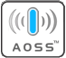

|  |
| Использование автоматической настройки беспроводного подключения (одним нажатием) | |||||
| Автоматическая настройка беспроводного подключения позволяет этому принтеру/многофункциональному устройству получать настройки беспроводной сети непосредственно из точки беспроводного доступа, поддерживающей режим Wi-Fi Protected Setup или AOSSTM. | |||||
| Если во время установки возникают неполадки, временно переместите устройство ближе к точке беспроводного доступа. | |||||
| Дальнейшие сведения о настройке точки беспроводного доступа для работы в режимах Wi-Fi Protected Setup и AOSSTM смотрите в руководстве производителя точки доступа. | |||||
| По завершении настройки принтера/многофункционального устройства можно переместить его в более удобное место, находящееся в диапазоне действия точки беспроводного доступа. | |||||
| |||||